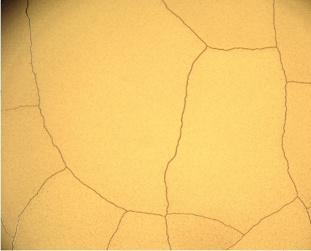
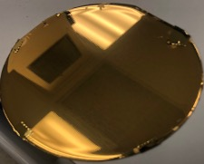
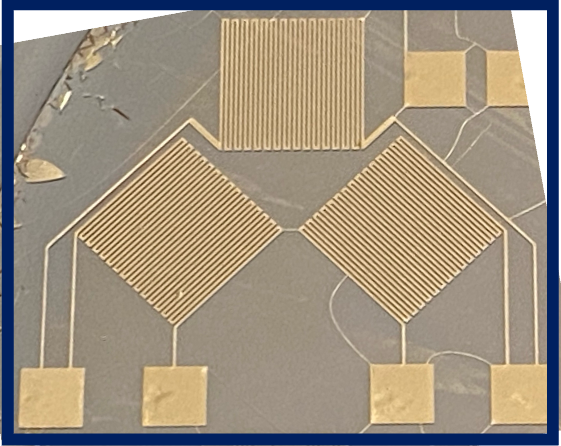
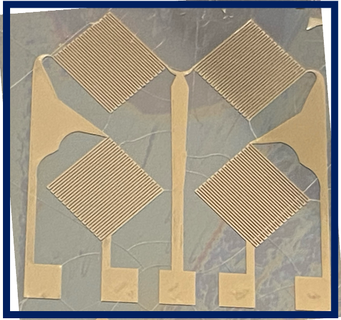
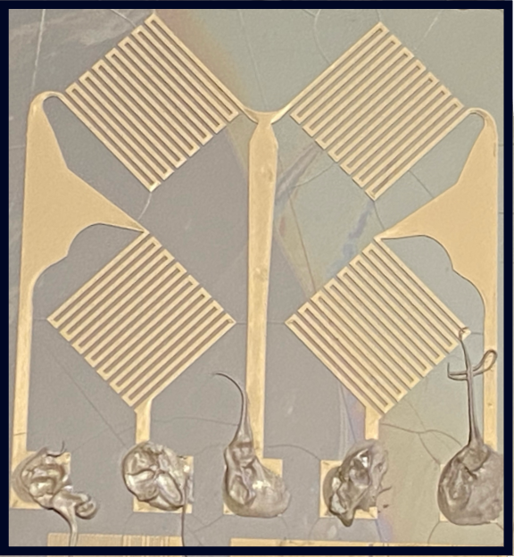
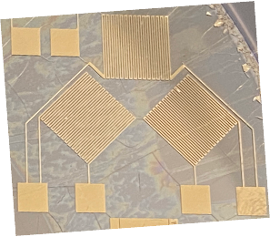

Plasma-Treated PDMS
Wrinkle-Free Metal Films
Surface Modification | Stress Mismatch Reduction | Clean Patterning
🧪 Key Techniques: O₂ Plasma Treatment (RIE) | E-beam Evaporation | AZ nLof 2020 Negative Resist | Lift-Off
🎭 Role: Sole process developer - Designed experiment, optimized plasma treatment, characterized results
🔬 Key Finding: Plasma treatment before metal deposition creates silicate-like surface layer with higher Young's modulus, reducing thermal/mechanical mismatch and eliminating wrinkle formation






Project Overview
This project investigates the effect of O₂ plasma treatment on PDMS surfaces prior to metal deposition to suppress wrinkle formation in thin metal films. Unlike the tunable wrinkling project where thermal mismatch was intentionally used to create wrinkles, here plasma treatment modifies the PDMS surface properties—creating a stiffer silicate-like layer—that reduces the thermal and mechanical mismatch between the elastomer and the deposited Cr/Au film, resulting in smooth, wrinkle-free, crack-free metal patterns.
Problem Statement
Initial trials of metal deposition on untreated PDMS resulted in:
- Wrinkle formation that interfered with device performance
- Poor pattern fidelity during subsequent photolithography
Hypothesis
Before vs. After Plasma Treatment

❌ Without Plasma Treatment
- Wrinkles
- Poor pattern fidelity
- Lift-off failures
✅ With Plasma Treatment
- Smooth, wrinkle-free surface
- No cracking
- Clean pattern transfer
- Successful lift-off
Modified Fabrication Process
Step 1: Substrate Preparation
Silicon wafer cleaned with acetone (120 sec), IPA (60 sec), DI water rinse, and SRD.
Step 2: PDMS Deposition & Curing
PDMS (10:1 ratio) spin-coated at 200 rpm → 1000 rpm. Cured at 80°C for 12 hours.
Step 3: CRITICAL STEP O₂ Plasma Treatment (Before Metal Deposition)
MARCH RIE System: O₂ plasma treatment performed on PDMS surface before E-beam evaporation.
Plasma Parameters (approximate):
- Power: 100W
- Pressure: 400 mTorr
- O₂ Flow Rate: 60 sccm
- Duration: 60-120 seconds
Surface Modification Mechanism:
- O₂ plasma converts surface Si-CH₃ groups to Si-O-Si (silicate-like network)
- Creates a thin, stiff "skin" layer with higher Young's modulus
- Introduces polar functional groups (-OH, -COOH) for better metal adhesion
- Reduces thermal expansion mismatch between PDMS and metal
Step 4: Metal Deposition (E-beam Evaporation)
Adhesion Layer: Chromium (150Å at 2 Å/s)
Conductor Layer: Gold (1000Å at 1.2 Å/s)
Measured thickness: Cr = 30.5 nm, Au = 115.7 nm
Note: Plasma treatment performed immediately before metal deposition (within 30 minutes) to maximize surface activation effect.
Step 5: Photolithography (Negative Resist)
AZ nLof 2020 Negative Resist: 500 rpm → 3000 rpm, 35 sec
Soft Bake: 70 sec at 110°C
UV Exposure: 80 mJ/cm² (OAI 800 Mask Aligner)
Post-Exposure Bake: 70 sec at 110°C
Development: AZ 300 MIF, 60 sec
Step 6: Metal Etch & Lift-Off
Gold Etchant: Remove exposed gold
Chromium Etchant: Remove exposed chromium
Remover PG Soak: 4 hours for clean lift-off
Proposed Mechanism: Why Plasma Treatment Suppresses Wrinkling
| Property | Untreated PDMS | Plasma-Treated PDMS Surface |
|---|---|---|
| Surface Chemistry | Si-CH₃ (hydrophobic) | Si-O-Si (silicate-like, hydrophilic) |
| Young's Modulus | ~1-3 MPa (bulk) | Higher (stiff "skin" layer) |
| Thermal Expansion Coefficient | ~310 ppm/°C | Reduced (closer to metal) |
| Surface Energy | ~20 mJ/m² (low) | >70 mJ/m² (high) |
| Metal Adhesion | Poor | Excellent |
Why This Matters:
- Reduced thermal mismatch: The stiffer plasma-treated layer better matches the thermal expansion of the metal film
- Stress distribution: The stiff surface layer distributes thermal stress more uniformly
- Improved adhesion: Polar functional groups (-OH, -COOH) form stronger bonds with deposited metal
- No wrinkle nucleation: Without compressive stress concentration, wrinkles do not form
Results Summary
| Parameter | Untreated PDMS | Plasma-Treated PDMS |
|---|---|---|
| Wrinkle Formation | Present | Eliminated |
| Metal Cracking | Present | Eliminated |
| Pattern Fidelity | Poor | Clean/Sharp |
| Lift-Off Success | Inconsistent | Reliable |
| Surface Roughness | High (wrinkled) | Low (smooth) |
Equipment & Tools Used
- Spin Coater (Headway Research)
- Despatch Oven (PDMS curing)
- MARCH RIE (O₂ Plasma Treatment)
- CHA E-beam Evaporator (Cr/Au deposition)
- OAI 800 Mask Aligner (UV exposure)
- Hotplates (soft/post-exposure bake)
- Develop Deck (AZ 300 MIF)
- Wet Deck (Gold/Chromium etch)
- Solvent Hood (Remover PG lift-off)
- Olympus Optical Microscope (inspection)
- Alpha Step Profilometer (thickness)
Materials Used
- Substrate: Silicon wafer
- Elastomer: PDMS (Sylgard 184, 10:1 ratio)
- Plasma Gas: Oxygen (O₂)
- Negative Resist: AZ nLof 2020
- Adhesion Layer: Chromium (150Å)
- Conductor: Gold (1000Å)
- Developer: AZ 300 MIF
- Etchants: Gold etchant, Chromium etchant
- Lift-Off Solvent: Remover PG
Downloads
- Process Runcard (Plasma-Treated) (Excel)
- Plasma Treatment Protocol (PDF)
- Untreated vs. Plasma-Treated Comparison (PDF)
Key Insights & Learnings
- Plasma treatment timing is critical: Metal deposition must occur within 30 minutes of plasma treatment (surface activation decays over time)
- Stiffness gradient matters: The stiff plasma-treated surface layer acts as a buffer zone between soft PDMS and metal
- Process control: Plasma parameters (power, time, pressure) must be carefully controlled to avoid over-treatment (which can cause surface cracking)
- Failure analysis approach: Systematic troubleshooting identified plasma treatment as the key variable controlling wrinkle formation
Skills Acquired
Relationship to Tunable Wrinkling Project
This project represents the controlled suppression of wrinkle formation, complementing the tunable wrinkling project where wrinkles were intentionally created:
| Aspect | Tunable Wrinkling Project | This Project (Plasma-Treated) |
|---|---|---|
| Objective | Create controlled wrinkles | Eliminate wrinkles |
| Plasma Treatment | After metal deposition (descum) | Before metal deposition |
| PDMS Surface State | Untreated (hydrophobic) | Plasma-treated (hydrophilic, stiffened) |
| Result | Wrinkled metal films | Smooth, flat metal films |
| Application | Stretchable electronics, tunable optics | High-fidelity patterning, sensors |
Conclusion
This project successfully demonstrated that O₂ plasma treatment of PDMS surfaces prior to metal deposition effectively suppresses wrinkle and crack formation in thin Cr/Au films. The plasma treatment creates a stiff, silicate-like surface layer with higher Young's modulus and reduced thermal expansion mismatch with the deposited metal. Key findings include: (1) untreated PDMS results in cracked, wrinkled metal films; (2) plasma treatment before E-beam evaporation eliminates wrinkles and cracking; (3) the modified surface enables clean photolithography patterning and reliable lift-off; (4) plasma treatment timing is critical (deposition within 30 minutes). This process is essential for applications requiring smooth, flat metal patterns on PDMS for flexible sensors and electronics.